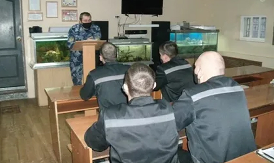
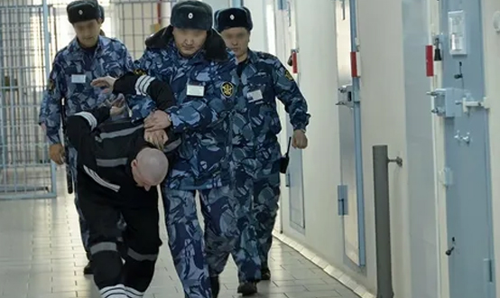

Общая характеристика преступлений против здоровья населения и общественной нравственности
Преступления против здоровья населения и общественной нравственности сгруппированы в главе 25 УК РФ (ст. 228–245).
Видовым объектом данных посягательств являются общественные отношения, связанные с обеспечением здоровья населения и охраной нравственных устоев общества.
ЦИТАТА
Здоровье – это состояние жизнедеятельности, обеспечивающее необходимые условия для выполнения биологических и социальных функций человека.
ЦИТАТА
Общественная нравственность — это сложившаяся в обществе совокупность правил и норм, имеющих социально-всеобщее значение и регулирующих поведение человека во всех сферах общественной жизни — в коллективе, в семье, в межличностных отношениях и т.д.; а также система взглядов о плохом и хорошем, о добре и зле, о справедливости, чести и других социальных категориях.
Объективная сторона большинства преступлений данной категории подразумевает совершение активных действий (склонение к потреблению наркотических средств или психотропных веществ (ст. 230 УК), жестокое обращение с животными (ст. 245 УК) и др.). Деяния, предусмотренные ч. 5 ст.228 УК («Нарушение правил производства, изготовления, переработки, хранения, учета, отпуска, ...наркотических средств или психотропных веществ»), ч. 4 ст. 234 УК («Нарушение правил производства, приобретения, хранения, учета, отпуска, ...сильнодействующих или ядовитых веществ»), ст. 236 УК («Нарушение санитарно-эпидемиологических правил»), могут совершаться как путем действия, так и путем бездействия.
По конструкции большинство составов рассматриваемых преступлений относятся к числу формальных составов. Исключениями можно считать нарушение правил оборота сильнодействующих или ядовитых веществ (ч. 4 ст. 234 УК), нарушение санитарно-эпидемиологических правил (ст. 236 УК), выпуск или продажа товаров, выполнение работ либо оказание услуг, не отвечающих требованиям безопасности (ст. 238 УК), уничтожение или повреждение памятников истории и культуры (ст. 243 УК) – составы этих деяний материальные.
С субъективной стороны большинство преступлений характеризуется умышленной виной (только деяния, предусмотренные ст. 236 и 238 УК РФ, совершаются по неосторожности). Для отдельных составов квалифицирующее значение имеют цель и мотив (например, ст. 234 УК — незаконный оборот сильнодействующих или ядовитых веществ в целях сбыта).
Субъектами рассматриваемых преступлений являются физические вменяемые лица, достигшие 16 лет (только за хищение либо вымогательство наркотических средств или психотропных веществ (ст. 229 УК) – с 14 лет). Субъект некоторых преступлений специальный (например, ч. 5 ст. 228 УК (нарушение правил оборота наркотических средств или психотропных веществ), ст. 237 УК (сокрытие информации об обстоятельствах, создающих опасность для жизни или здоровья людей)).
С учетом объекта посягательства все указанные деяния можно разделить на следующие группы:
а) посягательства на здоровье населения – ст. 228, 228.1., 228.2., 228.3., 228.4., 229, 229.1., 230, 230.1., 230.2., 231, 232, 233, 234, 234.1., 235, 235.1., 236, 237, 238, 238.1., 239 УК;
б) посягательства на общественную нравственность – ст. 240, 240.1., 241, 242, 242.1., 242.2., 243, 243.1., 243.2., 243.3., 243.4., 244, 245 УК.
Преступления против здоровья населения
1) Преступления в сфере незаконного оборота наркотических и психотропных веществ (ст. 228–230, 231–233, 234.1. УК). Предмет таких посягательств – наркотические средства (растительного происхождения – опий, гашиш, кокаин и др.; синтетического происхождения – омнопон, промедол, ноксирон и др.) и психотропные вещества (ЛСД, метамфетамин, мескалин и др.). Неограниченное потребление подобных веществ и средств вызывает наркотическое опьянение, часто провоцирующее противоправное поведение, а также привыкание к ним, т.е. заболевание наркоманией. Наркотические средства изъяты из свободного оборота либо существенно ограничены в нем (например, лекарственные наркотикосодержащие препараты). Правительство РФ ведет специальный Перечень наркотических средств, психотропных веществ и их прекурсоров, подлежащих контролю в РФ, – действия с указанными в нем веществами подпадают под уголовную ответственность.
В основном рассматриваемые преступления с объективной стороны характеризуются совершением активных действий с наркотиками (изготовлением, хищением, сбытом и т.п.). Составы преступлений данной группы сконструированы по типу формальных (кроме ст. 229 УК — хищение наркотических средств или психотропных веществ). С субъективной стороны все деяния характеризуются умышленной виной. Субъектами всех деяний, связанных с наркотиками, могут быть физические вменяемые лица, достигшие 16 лет; за хищение и вымогательство наркотических средств и психотропных веществ (ст. 229 УК РФ) ответственность наступает с 14 лет.
Данную группу преступлений можно разделить на следующие подгруппы:
а) нелегальное изготовление и распространение наркотических средств и психотропных веществ:
- ст. 228, 228.1. – незаконные приобретение, хранение, перевозка, изготовление, переработка наркотических средств, психотропных веществ, а также незаконные приобретение, хранение, перевозка растений, содержащих наркотические средства или психотропные вещества, либо их частей, содержащих наркотические средства или психотропные вещества;
- ст. 228.2. – нарушение правил оборота наркотических средств или психотропных веществ;
- ст. 228.3., 228.4. – незаконные приобретение, хранение или перевозка прекурсоров (веществ, не являющихся наркотическими, но используемых в процессе изготовления наркотических веществ) наркотических средств или психотропных веществ, а также незаконные приобретение, хранение или перевозка растений, содержащих такие прекурсоры, либо их частей;
- ст. 229.1. – контрабанда наркотических средств, психотропных веществ, их прекурсоров или аналогов, растений, содержащих наркотические средства, психотропные вещества или их прекурсоры, либо их частей, содержащих наркотические средства, психотропные вещества или их прекурсоры, инструментов или оборудования, используемых для изготовления наркотических средств или психотропных веществ;
- ст. 231. – незаконное культивирование растений, содержащих наркотические средства или психотропные вещества либо их прекурсоры;
- ст. 233 – незаконная выдача либо подделка рецептов или иных документов, дающих право на получение наркотических средств или психотропных веществ;
- ст. 234.1. – незаконный оборот новых потенциально опасных психоактивных веществ;
б) хищение либо вымогательство наркотических средств или психотропных веществ (ст. 229 УК РФ);
в) приобщение лиц к потреблению наркотических средств и психотропных веществ:
- ст. 230 – склонение к потреблению наркотических средств, психотропных веществ или их аналогов (путем возбуждения желания потребить наркотик или психотропное вещество предложением, советом, уговором, просьбой, рекламированием его свойств, ощущений, возникающих после приема препарата; обмана; принуждения);
- ст. 230.1. – склонение спортсмена к использованию субстанций и (или) методов, запрещенных для использования в спорте;
- ст. 230.2. – использование в отношении спортсмена (в том числе без его согласия и или ведома) субстанций и (или) методов, запрещенных для использования в спорте;
- ст. 232 – организация либо содержание притонов или систематическое предоставление помещений для потребления наркотических средств, психотропных веществ или их аналогов.
2) Преступления в сфере медицинской и фармацевтической деятельности:
- ст. 235 – незаконное осуществление медицинской деятельности или фармацевтической деятельности (лицом, не имеющим лицензии на данный вид деятельности, если это повлекло по неосторожности причинение вреда здоровью человека);
- ст. 235.1. – незаконное производство лекарственных средств и медицинских изделий;
- ст. 238.1. – обращение фальсифицированных, недоброкачественных и незарегистрированных лекарственных средств, медицинских изделий и оборот фальсифицированных биологически активных добавок.
3) Иные преступления:
- ст. 234 – незаконный оборот сильнодействующих или ядовитых веществ в целях сбыта;
- ст. 236 – нарушение санитарно-эпидемиологических правил (повлекшее по неосторожности массовое заболевание или отравление людей либо создавшее угрозу наступления таких последствий, а также смерть человека);
- ст. 237 – сокрытие информации об обстоятельствах, создающих опасность для жизни или здоровья людей (лицом, обязанным обеспечивать население и органы, уполномоченные на принятие мер по устранению такой опасности);
- ст. 238 – производство, хранение, перевозка либо сбыт товаров и продукции, выполнение работ или оказание услуг, не отвечающих требованиям безопасности;
- ст. 239 – создание некоммерческой организации (религиозного или общественного объединения), посягающей на личность и права граждан (деятельность которого сопряжена с насилием над гражданами или иным причинением вреда их здоровью).
Преступления против общественной нравственности
1) Организация занятия проституцией:
- ст. 240 – вовлечение в занятие проституцией (или принуждение к продолжению занятия проституцией) путем применения к женщине насилия или угрозы его применения, шантажа, уничтожения или повреждения имущества либо путем обмана;
- ст. 240.1. – получение сексуальных услуг (за вознаграждение или обещание вознаграждения) несовершеннолетнего в возрасте от 16 до 18 лет лицом, достигшим 18-летнего возраста;
- ст. 241 – организация занятия проституцией (содержание притонов для занятия проституцией, систематическое предоставление помещений для занятия проституцией и т.п.).
2) Изготовление и оборот порнографической продукции (отображающей половое сношение и другие формы сексуального поведения с целью вызвать сексуальное возбуждение):
- ст. 242 – незаконные изготовление и оборот порнографических материалов или предметов (в целях распространения, публичной демонстрации или рекламирования);
- ст. 242.1. – изготовление и оборот материалов или предметов с порнографическими изображениями несовершеннолетних;
- ст. 242.2. – использование несовершеннолетнего в целях изготовления порнографических материалов или предметов (фото-, кино- или видеосъемка несовершеннолетнего в целях изготовления и (или) распространения порнографических материалов либо привлечение несовершеннолетнего в качестве исполнителя для участия в зрелищном мероприятии порнографического характера, совершенные лицом, достигшим 18-летнего возраста).
3) Преступления в сфере охраны памятников культурного наследия и археологии:
ст. 243, 243.1. – уничтожение или повреждение, нарушение требований сохранения или использования объектов культурного наследия (памятников истории и культуры) народов РФ, включенных в единый государственный реестр объектов культурного наследия (памятников истории и культуры) народов РФ, выявленных объектов культурного наследия, природных комплексов, объектов, взятых под охрану государства, или культурных ценностей;
- ст. 243.2. – незаконные (без получения открытого листа) поиск и (или) изъятие археологических предметов из мест залегания;
- ст. 243.3. – уклонение исполнителя земляных, строительных, мелиоративных, хозяйственных или иных работ либо археологических полевых работ, осуществляемых на основании разрешения (открытого листа), от обязательной передачи государству обнаруженных при проведении таких работ предметов, имеющих особую культурную ценность, или культурных ценностей в крупном размере;
- ст. 243.4. – уничтожение либо повреждение воинских захоронений, а также памятников, стел, обелисков, других мемориальных сооружений или объектов, увековечивающих память погибших при защите Отечества или его интересов либо посвященных дням воинской славы России.
4) Иные преступления:
- ст. 244 – надругательство над телами умерших и местами их захоронения (уничтожение, повреждение или осквернение мест захоронения, надмогильных сооружений или кладбищенских зданий, предназначенных для церемоний в связи с погребением умерших или их поминовением);
- ст. 245 – жестокое обращение с животными (в целях причинения ему боли и (или) страданий, а равно из хулиганских побуждений или из корыстных побуждений, повлекшее его гибель или увечье).